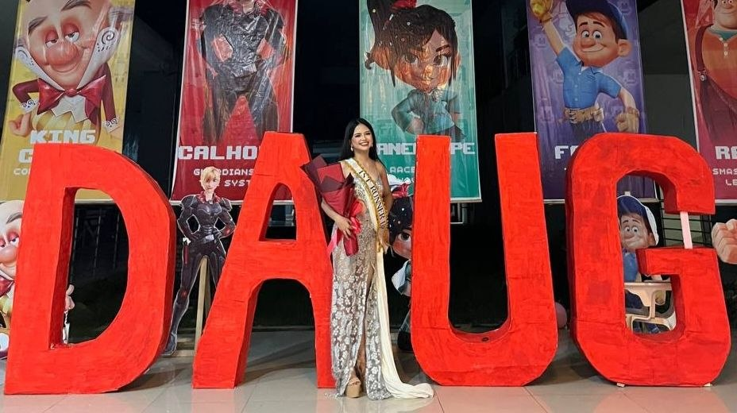
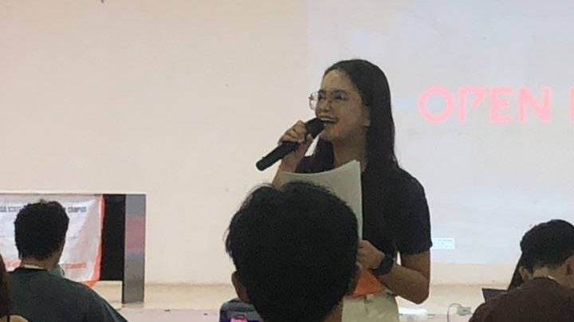
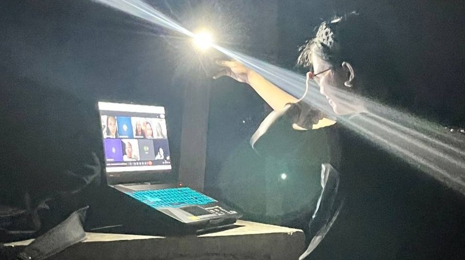

Bachelor of Science in Information Technology
Caraga State University
Hello, everyone! I am Elaine Mae M. Balbada, a 3rd Year Bachelor of Science in Information Technology
student from Caraga State University.
In this website, I will share some of the most memorable experiences I have had during my three years in college. From trying things outside my comfort zone to facing different challenges, these experiences have taught me many things and became an important part of my journey.
My Memories | Find Me Here | A Little More About Me | Things I Have Learned | My HTML Structure
These are some of the experiences that became memorable parts of my college life.

This was my first pageant during my second year of college. I was hesitant at first because I never thought I was capable enough, even though my friends, blockmates, and seniors had been encouraging me since first year. I eventually decided to join, and it became one of the best decisions I made because I gained confidence, learned a lot, and received more opportunities afterward.

This was my first time hosting an event, and I was nervous because I had never spoken in front of a crowd like that before. As the program continued, I became more comfortable and started enjoying the experience. It taught me that stepping outside my comfort zone can lead to opportunities I never expected.

This was me after our ITE 13 defense. Since we did not have an internet connection at home, I had to stay outside to attend the defense. I was relieved when it was finally over, and the experience reminded me that I could get through even the stressful parts of college.
Here are some links where you can learn more about me and connect with me online.
About Me: My Profile
My Work: Github
Lets Connect: elainebalbada@gmail.com
More of my Journey: Explore My Multimedia
Some parts of my college journey cannot be captured through pictures alone. Here are a few more moments that show the things I enjoy and the experiences I have had along the way.
Singing has always been one of the things I enjoy doing, especially during my free time. Here is a short recording of me singing.
This short video gives a glimpse of one of my photoshoot experiences in MS. CCIS. Moments like this are also part of the experiences that helped me become more comfortable and confident in front of the camera.
This section shows how the elements on my webpage are connected through parent-child relationships in the HTML DOM.
Thank you for taking the time to visit my page.
HTML Practical Application Activity | 2026